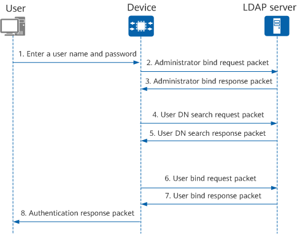

LDAP Authentication and Authorization Process
LDAP defines multiple operations to implement a variety of functions. The bind and query operations are typically used for user authentication and authorization.
- The bind operation has two functions: One is to set up a connection with the LDAP server and obtain the access permissions of the LDAP server. The other is to check the validity of user information.
- The query operation is a process of creating query conditions and obtaining the directory resource information of the LDAP server.

- When accessing an LDAP server, a user enters the user name (for example, User2) and password and sends an authentication request to the device.
- The device obtains the user name and password, and sends a bind request packet carrying the administrator's DN and password to an LDAP server for obtaining the search right.
After receiving the administrator bind request packet, the LDAP server verifies the administrator's DN and password. If the administrator's DN and password are correct, the binding is successful. The LDAP server sends an administrator bind response packet to the device.
- After receiving the response packet, the device creates the filter criterion according to the user name and sends a DN search request packet to the LDAP server. For example, CN=User2 is a filter criterion.
After receiving the DN search request packet, the LDAP server searches for the DN based on the Base-DN, search range, and filter criterion. If a DN is found, the LDAP server sends a response packet to the device. One or more DNs may be found. In the directory structure shown in Overview of LDAP, if the Base-DN is "dc=huawei,dc=com", two DNs are returned: "CN=User2, Departments=R&D, OU=People, dc=huawei, dc=com" and "CN=User2, Departments=R&D, OU=Equipment, dc=huawei, dc=com."
- The device sends a bind request packet carrying the user DN and password to the LDAP server.
After receiving the bind request packet, the LDAP server verifies the password.
- If the password entered by the user is correct, the LDAP server sends a successful bind response packet to the device.
- If the password entered by the user is incorrect, the LDAP server sends a failed bind response packet to the device. The device sends a new bind request packet carrying the next DN found to the LDAP server. This procedure repeats until a DN is successfully bound. If no DN is successfully bound, the device notifies the user that the authentication fails.
- After the authentication is successful, the device notifies the user of the result and the user obtains access permission.
The LDAP authorization process is similar to the LDAP authentication process. You must bind the device to the LDAP server and then query user authorization information.

The sequence in which the administrator bind request and response packets and user bind request and response packets are sent depends on the configured LDAP server type. When the server type is ad-ldap, the user bind request and response packets are sent before the administrator bind request and response packets.
When the undo ldap-server authorization bind-user enable command is used to cancel user binding during LDAP authorization, the administrator bind request and response packets are sent before the user bind request and response packets.
During LDAP packet exchange in the AD authentication process, the administrator bind request and response packets are sent before the user bind request and response packets.